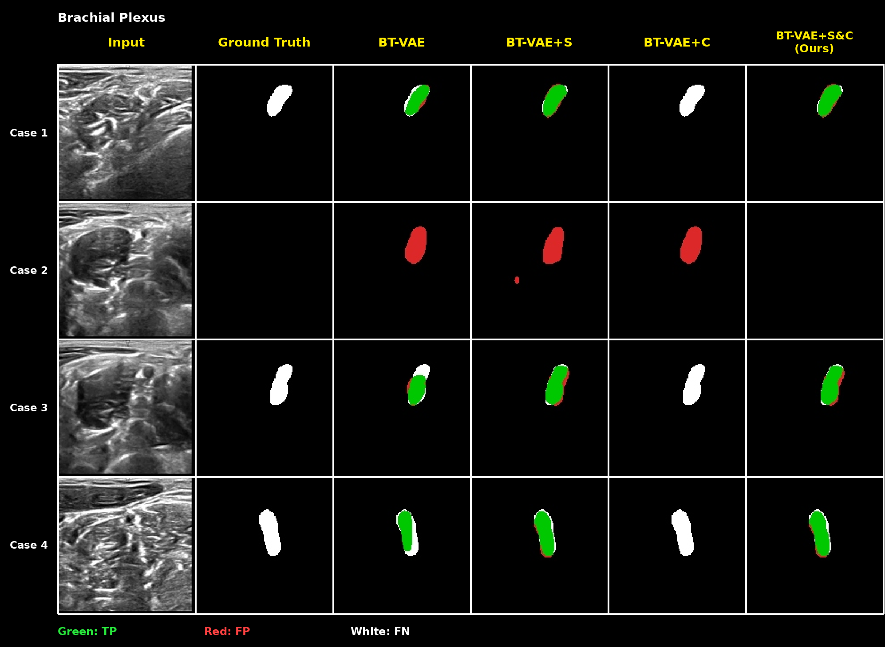
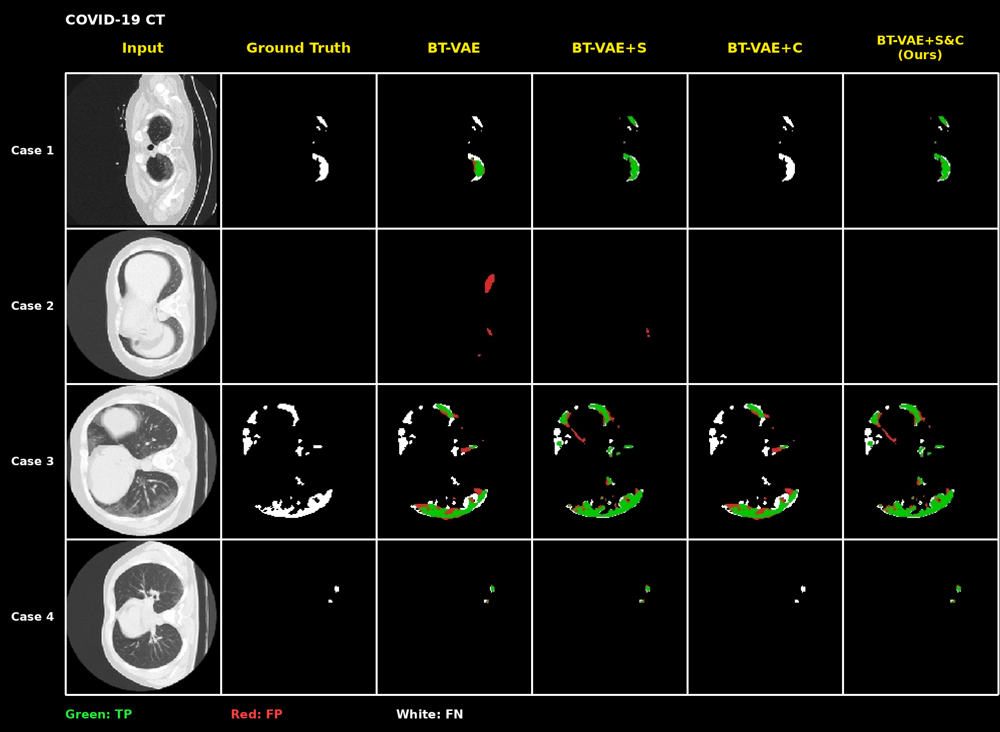

0.640 → 0.801
BT VAE → BT VAE+S&C(Ours) · 전체 Dice

Barlow Twins 자기지도 사전학습으로VAE 인코더를 초기화→ Barlow Twins 학습으로 일관된 표현을 학습 [1][2]
VAE의 확률적 잠재 표현으로 불확실성 반영→ 오검출(FP) 완화에 기여


| 모델 | 전체 Dice | 병변 Dice | 거짓 양성률 (FPR) | 거짓 음성률 (FNR) |
|---|---|---|---|---|
| BT VAE | 0.640 | 0.595 | 0.300 | 0.019 |
| BT VAE+S | 0.745 | 0.723 | 0.225 | 0.074 |
| BT VAE+C | 0.740 | 0.547 | 0.000 | 0.185 |
| BT VAE+S&C(Ours) | 0.801 | 0.691 | 0.050 | 0.111 |

